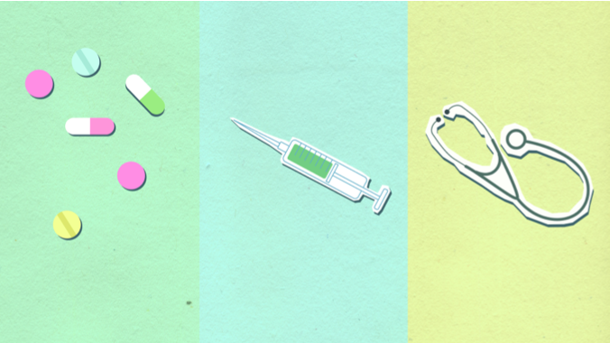
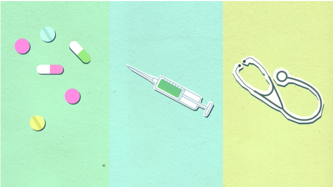
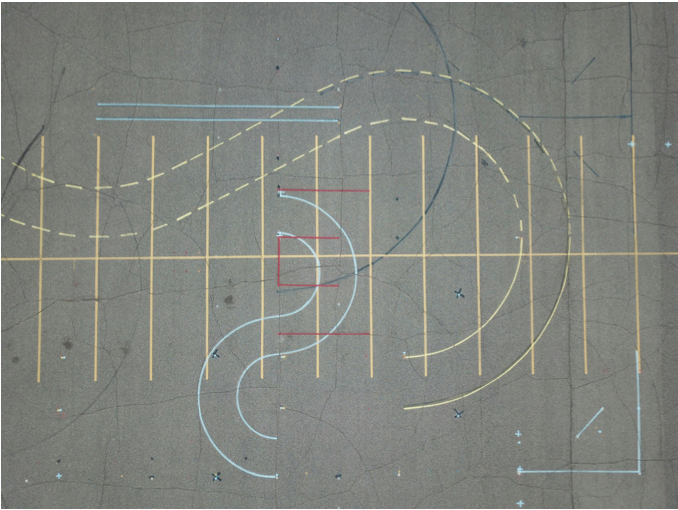
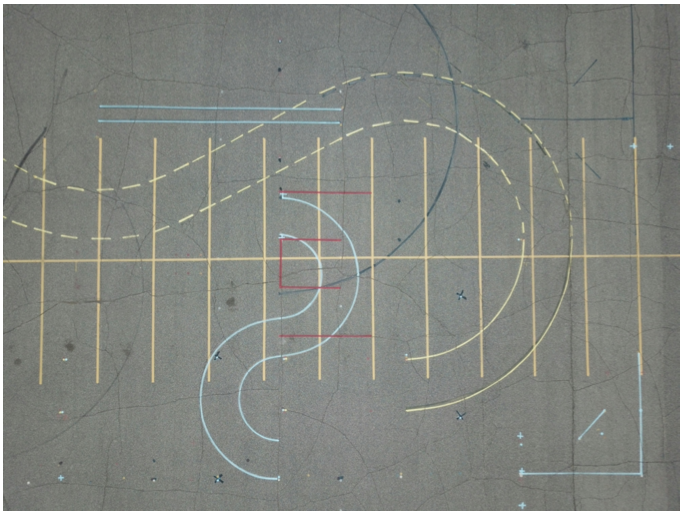
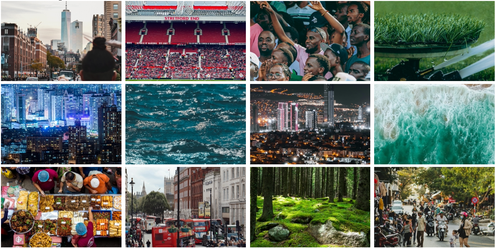
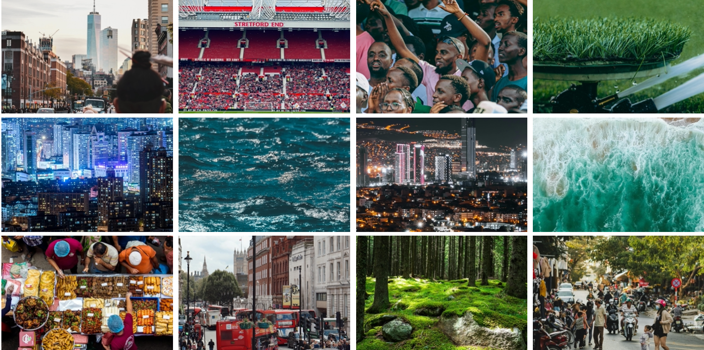
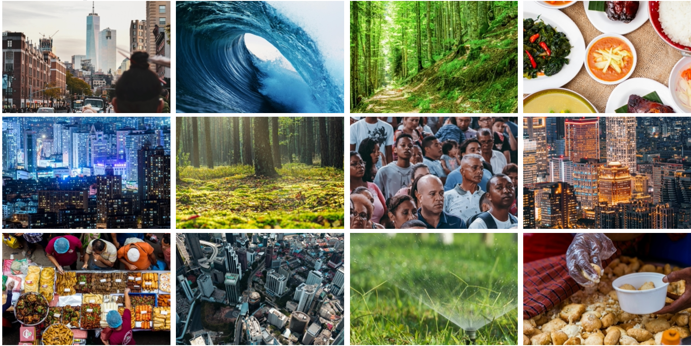
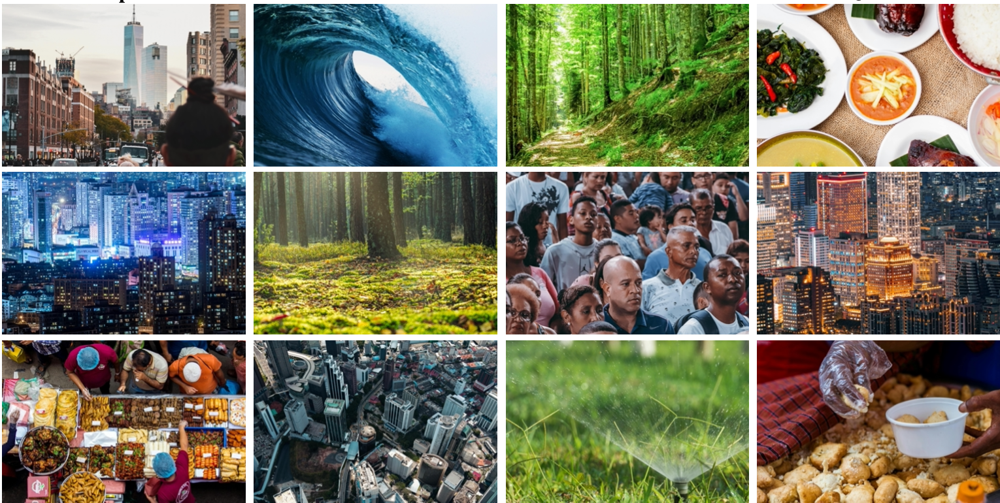
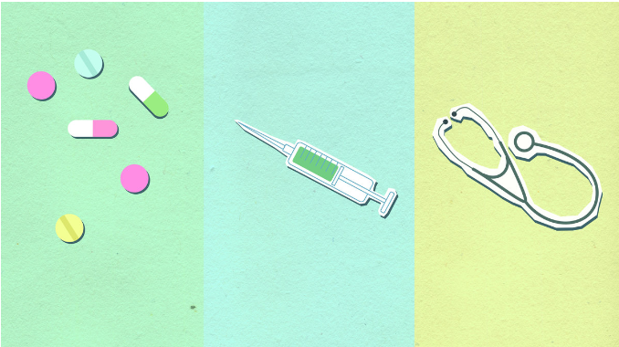
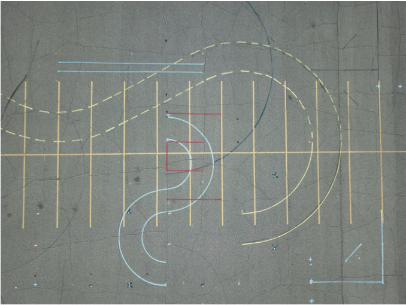

I tried multiple attempts to get an ai agent to remove the redundant or unnecessary file, folders,
and images, but they keep failing. They would either delete needed files or leave folders or files
that should be deleted. I ended up having to use an ai agent just to analyze the project folder to
return a JSON list of strings. Later I have code that goes through the list and removes the unnecessary
files. I simply couldn't get an ai agent to work correctly. I must not have been passing it good enough prompt.
With the implementation I used, I was only able to get the zipped size down to 53.3 MB (megabits). Because it wasn't
under 50 MB, I couldnt upload it to Overleaf to compile it into a pdf. However, in Part 2, you will be able
to see that it was able to be compiled correctly.
Part 1: Whole Project Compression
Reduce the total project size (compressed .zip) to less than 50 MB.
- Remove unnecessary or unused files (e.g., backup folders, duplicate images)
- Ensure the LaTeX project compiles successfully
- The compiled PDF should remain visually reasonable (no obvious corruption or severe artifacts)
Part 2: PDF Compression
In addition to Part 1, further optimize the compiled PDF.
- Project size (zip): < 50 MB
- Compiled PDF size: < 30 MB
- The compiled PDF should remain visually reasonable (no obvious corruption or severe artifacts)
For Part 2, I used an ai agent to call a python function that uses PIL library to compress the images.
Do to the fact that current Large Language Models (LLMs) are essentially advanced prediction engines
for text and code. They can "understand" the concept of an image, but cannot physically reach into
Google Drive, grab a binary file, and rearrange its pixels. If I asked an AI to "rewrite the data
of this image to make it smaller" without a library, it might try to output a wall of hexadecimal
text or base64 code. Also, processing images is computationally expensive. In this approach, I am
using them as a team, where the AI Agent acts as the "Brain," and PIL acts as the "Hands."
I was able to get the zip to 27.3 MB and the compiled pdf to 26.6 MB.
As you can see below, the images remained clear and visually accurate.








Part 3: Both Project and PDF Compression
Achieve more aggressive optimization while maintaining quality.
- Project size (zip): < 30 MB
- Compiled PDF size: < 15 MB
- Visual quality must be preserved:
- Fine details should still be visible
- Images should not appear overly blurry or distorted
For Part 3, I used an ai agent again to call a python function that uses PIL library, but this
time I used more aggressive approach to scale the images down and strip the metadata out of
the images. Also, by using subsampling = 0 I pair this with Huffman Table Optimization.
This tells PIL to perform a complex mathematical pass to find the absolute most efficient
way to map the binary code to the image data.
With this approach, I was able to get the zip to 7.8 MB and the compiled pdf to 7.9 MB.
As you can see below, the images still maintain their fine details and none of them appear blurry or distorted.

